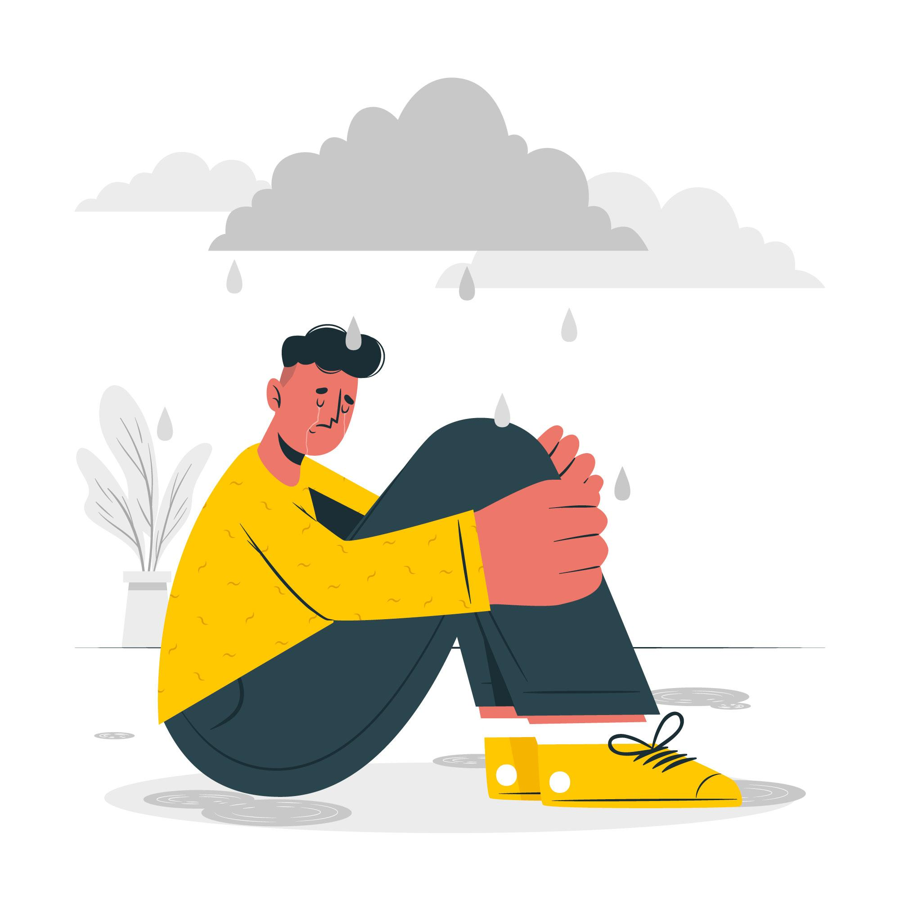

Hello! You might have arrived to our project for different reasons, out of curiosity or because you like data analysis.
Still, we considered that someone might have gotten to this page looking for help and resources; knowing someone that might be in danger or by personally having suicidal thoughts, here are some resources were you can look for help or ask for help. Remember you are important.
How to know someone is having suicidal thoughts
Someone thinking about suicide might be:
- Talking about suicide — saying things like "I'm going to kill myself" or "I wish I were dead"
- Withdrawing from social contact and being alone.
- Having risky and self-destructive activities (drugs, driving recklessly)
- Giving away belongings with no explanation
- Feeling like a burden
- Saying goodbye to people as if they won't see them again
- Feeling trapped or hopeless
- Drastic changes in mood and behaviour swings
- No hope for the future

What can you do to help someone that is suicidal
Small actions can make a difference. To help someone that is suicidal you can:
- Ask the person directly about their feelings.
- Listen to what the person has to say, and take it seriously
- Encourage them to get professional help
- Be respectful and acknowledge the person's feelings
- Don't be judgemental or patronizing
- Offer the person to help them get assistance and support
- If you know about their plans, remove objects they could use to hurt themselves from their homes
- Listening can make a huge difference
If you are thinking about commiting suicide
Remember you are important and try doing the following:
- Promise not to do anything serious right now
- Avoid drugs or alcohol
- Reach out to family and friends. Don't suffer in silence and get help.
- Get out to the sun or nature
- Stick to a schedule everyday
- Remember your personal goals
- Talk to someone about your suicidal thoughts. Tell the person exactly what you are telling yourself. If you have a suicide plan, explain it to them.
- Take a breath. People do get through this and bad moments in your life don't last forever.Suicidal crisis are almost always temporary.
- Even problems that seem very difficult have solutions.
- Talk to a therapist, or call a sucide hotline near you (they are below).
